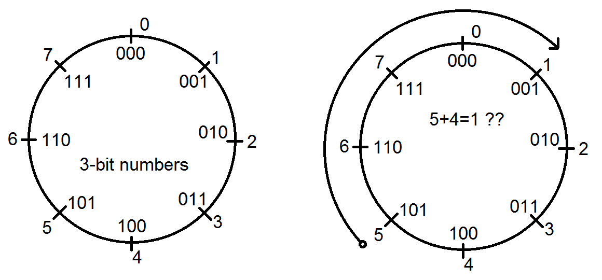

| Lecture: | 2 |
| Objective: | C data types, declarations, arithmetic,
and logic operations.
|
Operations
When you write code to perform a computation, you are manipulating
one or more operands using an operation. The operands are the data
values being manipulated and the operation defines how the operands
are manipulated. The execution of a C operation generates a result
that depends, in part, on the data type of the operands. This
dependency is generally a result of overflow, a topic that we will
take up shortly. The operands and operators are combined into C
expressions, combinations of one or more constants, variables,
operators, and functions evaluated to produce result. Today we will
look at several different types of operations and operands common
to many of the C programs you will write in this class. However,
before we get started lets examine a helpful C construct to alias
data types and make our programs self documenting and more readable.
typedef
C provides a way to provide an alias to a data type using the
keyword
typedef. This keyword allows you to
rename a data type. This is especially common on large development
projects where code is shared across hardware and software platforms
which may have different size interpretations for types like "int". The
following declarations are made
outside main in the
area you would generally use for global variables and include statements.
typedef unsigned char uint8_t;
typedef signed char int8_t;
typedef unsigned int uint16_t;
typedef signed int int16_t;
typedef unsigned long uint32_;
typedef signed long int32_t;
Fortunately for you, these declarations are automatically included in the
XC8 compiler used in our class whenever you put
#include <stdint.h> at the top of you
program (before main). We will do this in all our programs in lab and
so will assume the same for all programs written in class.
Main, variable declaration and assignment
Every C program starts running at the beginning of a code module
(a function) called "main". In our class, you will always identify
main using the declaration,
void main(void) {.
Every line of code after this and up to the closing "}" is considered to
be in main. An example program is given below and used in the following
discussion.
void main(void) {
uint8_t x = 100;
uint8_t z;
z = x + x;
}
After you declare main, most of your programs will have variable
declarations. These should all be placed at the top of main before
any of the expressions composing the body of your program. While
some C compilers may allow it, it is generally frowned on to include
new variable declarations in the body of your programs. C is
"typed language" meaning that you are required to declare the data
type for any variable that you want to use. You do this by placing
the data-type followed by the variable name, and an optional initial value
on a single line followed by a semicolon.
In the example above, the variables x and z are stored in 8-bits and
interpreted as unsigned
binary numbers. This means that we can store the values [0, 255] in
these variables. The variable declaration
uint8_t x = 100; initializes the variable
x, so the first time that it is referenced in the program (if it hasn't
already been changed), it has value 100. The value of x can be changed
anywhere in your program - an initial value does not make a variable
a constant.
I don't really consider variable declarations to be code that is
executed, rather it sets aside space for our variables that are
manipulated by the following instructions. The real work of the program
occurs with the expression composing the body of the program. In the
very simple program above, the body consists of a single statement
z = x + x; The equal sign in this expression
divides the statement into a left had side (LHS) and a right hand side
(RHS). The computer will evaluate the expression on the RHS and assign
it to the variable on the LHS. The computer evaluates an expression by
looking up the values for any variables, then applying operations to
the operands until the RHS is reduced to a single value. In our simple
program, evaluating
x + x produces the value
200, which is then assigned to the variable z. Any subsequent reference
to the variable z (on a RHS), will cause z to evaluate to 200.
All went well in our example; the result of the evaluation, 200, was
able to "fit" into the uint8_t data type for the result variable z.
However, this will not always be the case. Unlike general purpose
computers, microcontrollers will almost never alert you when the
evaluation of an expression is too large to fit into the result
variable. For example, what would happen if x = 200 when the
statement
z = x + x; is executed by a
microcontroller?
Overflow and modular arithmetic
When performed with the correct sized data type, you should rarely
need to concern yourself what happen when the result of an operation
exceeds the ability of data-type to hold it. If you peform an operation
on data which yields a result that exceed the range of the word-size
you have generated an
overflow condition.
Let's look at a simple case of overflow to more clearly understand what
is going on. Let's work on a hypothetical computer that has a uint3_t data
type (a 3-bit word size). A 3-bit integer can only represent values
from [0 … 7] inclusive. When interperted as integers the
decimal values for each
possible 3-bit word are shown at left in the figure below. The values
are arranged in clockwise counting order. As you count up from 0, you
should travel clockwise around the circle encountering incrementally
larger numbers. But what is going on when we reach 7 and increment back
to 0?
The hardware that performs the addition of two values
inside the computer is called an adder. Adders are built from full-adders.
The adder for our imaginary machine has 3 full adders, forming what is called
a 3-bit adder. When told to add 1 to 7, the 3-bit adder cannot generate
the value 8 because it has a 4-bit representation, 0b1000. By its nature,
the 3-bit adder keeps the least significant 3-bits from the sum 7+1, yielding
a result 0.
Now let's perform an operation on data that will yield an overflow: 5+4.
Let's use a adding technique that you first learned in school, counting
off on a number line, however in our case, let's count around our circle.
In the figure at right, we start at 5 and count-up around the circle 4
times, landing on the value 1. So 5+4=1.

You could also arrive at this
answer by performing 5+4=9, and then recognizing that 9 is greater than
the largest 3-bit representation, subtract off 1 encirclement of the
3-bit counting wheel, 8. Hence, I would write 5+4 = 9-8 = 1. You will
find this second technique more useful when diagonising overflow problems
in your programs. Let's do one more example using an 8-bit word-size.
Let's return to the example at the end of the previous section, the computer
was trying to store the value 400 (200 + 200) into the variable z. Since
z has type uint8_t it can only store values in the range [0, 255]. Most
microcontollers will not halt execution on this error and instead
store the least significant 8-bit of the binary representation of 400
in z. You can verify that 400 = 0b110010000, so z = 0b10010000
which is equal to 144 when interpreted as an unsigned decimal value. I
tend to prefer a more graphic portrayal of what happens and think that
when we try to count past the maximum value that z can hold, in this case
255, we wrap around back to 0 instead of going to 256. Thus we drop a
set of 256 every time we count past 255. In the example above this would
assign z the value of 400 - 256 = 144.
If we were in an advanced computer science class, we would call the
operation of subtracting sets of 256 from a value until the value
is less than 256, finding the residue modulo 256.
You need to be on the look-out for invalid answers generated by the
operations because the microcontroller will not provide you with any
indication that overflow has occurred. Be vigilant!
C arithmetic operations
The most familiar type of operations are those that you learned
early in elementary school, arithmetic operations. Let's look at
a C-code example consisting of variable declarations and expressions
and then evaluate the expressions. You should notice that,
- every expression is terminated with a semicolon
- variable are declared before any expressions
- variables can be assigned an initial value in their declaration
- Comments are denoted with the "//" symbol
- expression are on the right side of the "=" sign
- the value of the expression is assigned to the variable on the
left side of the "=" sign
void main(void) {
uint8_t x = 25;
uint8_t y = 15;
uint8_t z = 10;
// comments will contain variable values after expression is executed
z = x + y; // z = 40
z = x - y; // z = 10
z += x; // z = 35
z = x++; // z = 25, x = 26
// expressions which generate overflow
z = y - x; // z = 245 (15 - 26 = -11 rolls to 256 - 11 = 245)
z = x * y; // z = 134 (26*15 = 390 mod 256 = 134) remember x=26!
// expressions which invoke operator precedence
z = 3*(x + y); // z = 123 (3*(26+15) = 123)
} // end main
Operator Precedence
Operator precedence tells you how to evaluate an expression where there
is ambiguity about the order in which operators are applied to the operands.
The list from
this Microchips website is reproduced below.
In the following table operators grouped together in a section have the
same precedence. For example, the first four entries in this table (),
[], ., and -> all share the same precedence. These four operators
follow the rule of Left-to-Right associativity which is used as a tie
breaker when two or more of these appear in the same expression. The
next group of operators starting with + and ending with (type) all share
the next level of precedence.
| Operator |
Description |
Associativity |
( )
[ ]
.
-> |
Parenthesized Expression
Array Subscript
Structure Member
Structure Pointer |
Left - to - Right |
+ -
++ - -
! ~
*
&
sizeof
(type) |
Unary + and - (Postitive and Negative Signs)
Increment and Decrement
Logical NOT and Bitwise Complement
Dereference (Pointer)
Address of
Size of Expression or Type
Explicit Typecast |
Right - to - Left |
| * / % |
Multiply, Divide, and Modulus |
Left - to - Right |
| + - |
Add and Subtract |
Left - to - Right |
| « » |
Shift Left and Shift Right |
Left - to - Right |
< <=
> >= |
Less Than and Less Than or Equal To
Greater Than and Greater Than or Equal To |
Left - to - Right |
| == != |
Equal To and Not Equal To |
Left - to - Right |
| & |
Bitwise AND |
Left - to - Right |
| ^ |
Bitwise XOR |
Left - to - Right |
| | |
Bitwise OR |
Left - to - Right |
| && |
Logical AND |
Left - to - Right |
| || |
Logical OR |
Left - to - Right |
| ?: |
Conditional Operator |
Right - to - Left |
=
+= -=
/= *=
%=
«= »=
&= |=
^= |
Assignment
Addition and Subtraction Assignments
Division and Multiplication Assignments
Modulus Assignment
Shift Left and Shift Right Assignments
Bitwise AND and OR Assignements
Bitwise XOR Assignment |
Right - to - Left |
| , |
Comma Operator |
Left - to - Right |
When expressions contain multiple operators, their precedence determines
the order of evaluation as shown in the following examples.
| Expression |
Effective Expression |
| a - b * c |
a - (b * c) |
| a + ++b |
a + (++b) |
| a + ++b * c |
a + ((++b)*c) |
If functions are used in an expression, there is no set order of evaluation
for the functions themselves.
e.g. x = f() + g()
There is no way to know if f() or g() will be evaluated
first.
If two operators have the same precedence, their associativity determines
the order of evaluation.
| Expression |
Associativity |
Effective Expression |
| x / y % z |
Left - to - Right |
(x / y) % z |
| x = y = z |
Right - to - Left |
x = (y = z) |
| ~++x |
Right - to - Left |
~(++x) |
You can rely on these rules, but it is good programming practice to
explicitly group elements of an expression by using parentheses.
C bitwise logical operations
Bitwise logical operations are the familiar AND, OR, XOR and NOT
performed on each pair of bits from the same bit-position in each
operand. We will explain this with an examples, but first let's
revview the logic operators AND, OR, XOR and NOT.
| operations | AND | OR | XOR | NOT
|
| symbol | & | | | ^ | ~
|
| truth table
| | 0 & 0 = 0
| | 0 & 1 = 0
| | 1 & 0 = 0
| | 1 & 1 = 1 |
| | 0 | 0 = 0
| | 0 | 1 = 1
| | 1 | 0 = 1
| | 1 | 1 = 1 |
| | 0 ^ 0 = 0
| | 0 ^ 1 = 1
| | 1 ^ 0 = 1
| | 1 ^ 1 = 0 |
|
|
With these tables in hand, let's look at an example of a C
bitwise logical operator using the following line of code.
uint8_t x;
x = 0b10100011 & 0b11001010;
This line of code will assign the bitwise logical AND of the two binary
operands to the variable x. To do this, for each bit position
(from the least significant bit to the most significant bit), get the pair
of operand bits, AND them together, and place the resulting bit in the
result at this same bit position.
In order to make this process easier, I like to align the operands on
top of each other (like when you add two multi-digit numbers together)
and AND each pair of bits in a coloumn as shown below. Note,
that I like to seperate long binary numbers into 4-bit units with a
space so that I can more easily work with them.
1010 0011
& 1100 1010
-----------
x=1000 0010
Hence,
x = 0b10100011 & 0b11001010 = 0b10000010;
Just in case this isn't clear, look at the least signifiant bit
(right-most) in the operation above. The 1 on top is ANDed with the
0 on the bottom. From the truth table for AND you should verify that
1 & 0 = 0. Hence the least significant bit of the result is 0.
Unlike the carry bit in addition, the AND of any one slice can not
effect the AND in adjacent bit slices.
The process to determine the bitwise logical value for a pair of
variables is identical to that for constants. Just align the bits
and determine the value of the result based on the operation. There
is one variation of this idea called bit-masking that proves to be
very useful tool to test and isolate bits in a variable. For
example, the following code-snippet tells you the bit value of the
most significant bit of an 8-bit variable x.
if ((x & 0b10000000) == 0)
printf("MSB of x is 0.\r\n");
else
printf("MSB of x is 1.\r\n");
In the explaination that follows, the 8-bits of x are denoted as
x
7 x
6 x
5 x
4
x
3 x
2 x
1 x
0. So what
we are cheking is the value of x
7 in our code segment.
The code snippet works because 0 ANDed with any bit is equal to
0. While 1 ANDed with a bit x, is equal to x. These two relationships
are described in the following:
x7 x6 x5 x4 x3 x2 x1 x0
& 1 0 0 0 0 0 0 0
----------------------
x7 0 0 0 0 0 0 0
The result of "(x & 0b10000000)" is either equal to 1000 0000 if
x
7 is 1 or 0000 0000 if x
7 is 0.
Because "0" is easier to write than "10000000", I checked the
result against 0. Note that "0" is the same as "00000000" because the
compiler will always pad values with leading zeros.
The following are some bitwise logical operations that you can try on your
own. The solutions are shown in the comments.
void main(void) {
uint8_t x = 0b10101100;
uint8_t y = 0b00110101;
uint8_t z = 0;
// comments will contain variable values after expression is executed
z = x & 0x0F; // z = 0b0000 1100
z = x & 0xF0; // z = 0b1010 0000
z = x | 0x0F; // z = 0b1010 1111
z = x | 0xF0; // z = 0b1111 1100
z = x ^ 0x0F; // z = 0b1010 0011
z = x ^ 0xF0; // z = 0b0101 1100
z = ~0b10101100; // z = 0b0101 0011
z = x & y; // z = 0b0010 0100
z = x | y; // z = 0b1011 1101
z = x ^ y; // z = 0b1001 1001
z = ~x; // z = 0b0101 0011
z = x<<1; // z = 0b0101 1000
z = x>>3; // z = 0b0001 0101
} // end main
C relational operations
In the next lecture we will examine conditional statements; statements
allowing us to change the execution flow of a program based on the
results of operation. Conditional statements use a True or False value
to determine which execution flow to follow. Operations which produce
a True or False value are called relational operators. In C, the
truth value True is associated with the integer value 1 and False
with the integer value 0. Hence relational operators always evaluate
to 0 or 1 regardless of the inputs.
void main(void) {
uint8_t x = 172;
uint8_t y = 53;
uint8_t z = 0;
// comments will contain variable values after expression is executed
// What follows are some uncommon statements that I would not
// expect to see in your (or my) programs from here on out. They
// are presented here to illustrate the evaluation of relational
// operators.
z = x > y; // z = 1
z = x >= y; // z = 1
z = x < y; // z = 0
z = x > 'a'; // z = 1 because 'a' is 97
z = x > y; // z = 1
z = 1 == 0; // z = 0
z = 0 == 0; // z = 1
z = 0x0F == 0x00; // z = 0
z = 0x00 == 0x00; // z = 1
} // end main
Please be careful when using the equality check relational operation
"==". It's very easy to overlook using a single equal sign and creating
a syntax error and an unintended assignment at worst (this is a tricky
bug to find).
C conditional logical operations
There are frequently cases when you need to change the execution flow
bases on more than one relational operation. In such cases you need to
use a logical operation to combine two or more relational operations.
We will call these combinations conditional logical operations. We will
use three conditional operations in our course, AND, OR and NOT,
represented using "&&", "||", and "!" respectively.
It is a quirk of the C programming language that any non-zero value
is treated as TRUE and zero is FALSE. So for example, 35 && 16 is
equivlent to TRUE && TRUE which is TRUE. So the result of
35 && 16 would be 1. The following code provides some examples with
these operators.
void main(void) {
uint8_t z = 0;
// comments will contain variable values after expression is executed
z = 1 && 1; // z = 1
z = 0 && 1; // z = 0
z = 1 || 0; // z = 1
z = 0 || 0; // z = 0
z = !0; // z = 1
z = !1; // z = 0
z = 0x0F && 0x0F; // z = 1
z = 0x00 && 0x0F; // z = 0
z = 0x0F || 0x00; // z = 1
z = 0x00 || 0x00; // z = 0
z = !0x0F; // z = 0
z = !0x00; // z = 1
} // end main
Test your understanding
You can find the solutions embedded in the "source code" for this
web page by right mouse clicking on this web page and selecting
"view source". The solutions are in HTML comments.
-
Complete the following table by interpreting the values of A, B, and Sum
as 4-bit unsigned binary numbers and as 4-bit 2’s complement numbers.
When filling in the unsig_ovf and sig_ovf columns use the validity of
the results to determine if overflowed has occurred.
| A | unsign | sign | B | unsign | sign | Fnc | Sum | unsigned | signed | unsig_ovf | sig_ovf
|
| 1010 | | | 1010 | | | sub | | | | |
|
| 1010 | 10 | -6 | 1111 | 15 | -1 | add | 1001 | 9 | -7 | 1 | 0
|
| 0010 | | | 0011 | | | sub | | | | |
|
| 0011 | | | 1010 | | | sub | | | | |
|
| 0100 | | | 0011 | | | add | | | | |
|
| 0111 | | | 0010 | | | add | | | | |
|
| 1000 | | | 0001 | | | sub | | | | |
|
| 1010 | | | 0101 | | | add | | | | |
|
| 1010 | | | 1010 | | | add | | | | |
|
| 1100 | | | 1111 | | | sub | | | | |
|
| 1100 | | | 0100 | | | add | | | | |
|
| 1100 | 12 | -4 | 0001 | 1 | 1 | sub | 1011 | 11 | -5 | 0 | 0
|
| 1110 | | | 0100 | | | add | | | | |
|
| 1110 | | | 1111 | | | sub | | | | |
|
| 1111 | | | 0000 | | | add | | | | |
|
| 1111 | | | 1111 | | | add | | | | |
|
- What happens when you increment an unsigned 8-bit variable x
which is currently equal to 255?
- Write an arithmetic expression that computes the radicand of
the quadratic formula. That is the expression inside the square
root. Assume that A,B and C are given as signed 16-bit values
and the radicand should also be signed 16-bit. Make sure to
include the variable declaration of the result.
- Write an arithmetic expression that computes the average of
4 values in the range [0,100]. The values are given in variables
A, B, C, and D. Make sure to include the variable declaration of
the result.
- If you tried to store the value 8,456,325 into an 8-bit variable,
what decimal value would end-up being stored in the variable?
- Write an expression to keep only the least significant byte of
a 32-bit integer X and set all the other bits to 0.
- Write an expression to multiply a 16-bit integer X by 10 using
shifts and adds.
- Complete the Result column in the following table listing any
variable(s) that change as a result of the operation. Your answers
should be in radix requested. In some cases
there may be more than one variable that changes. Assume that
the operands x, y, and z have type uint8_t.
| Answers in decimal |
| x | y | z | Operation | Result
|
| 82 | 23 | 10 | z = x + y; |
|
| 82 | 0x23 | 10 | z = x + y; |
|
| 0x82 | 23 | 10 | z = x + y; |
|
| 0x82 | 0x23 | 10 | z = x + y; |
|
| 82 | 23 | 10 | z = y - x; |
|
| 82 | 23 | 10 | z += x; |
|
| 82 | 23 | 10 | z += x++; |
|
| 82 | 23 | 10 | z -= x; |
|
| 82 | 23 | 10 | z *= x; |
|
| Answers in hexadecimal |
| 0xC5 | 0x53 | 0x3A | z = x & y; |
|
| 0xC5 | 0x53 | 0x3A | z &= x; |
|
| 0xC5 | 0x53 | 0x3A | z = x | y; |
|
| 0xC5 | 0x53 | 0x3A | z |= x; |
|
| 0xC5 | 0x53 | 0x3A | z = x ^ y; |
|
| 0xC5 | 0x53 | 0x3A | z ^= x; |
|
| 0xC5 | 0x53 | 0x3A | z = ~x; |
|
| 0xC5 | 0x3 | 0x3A | z = x << y; |
|
| 0xC5 | 0x3 | 0x3A | z = x >> y; |
|
| Answers in decimal |
| 82 | 23 | 10 | z = x > y; |
|
| 82 | 23 | 10 | z = x < y; |
|
| 82 | 82 | 10 | z = x < y; |
|
| 82 | 82 | 10 | z = x <= y; |
|
| 82 | 82 | 10 | z = x == y; |
|
| 82 | 82 | 10 | z = x != y; |
|
| Answers in decimal |
| 1 | 1 | 10 | z = x && y; |
|
| 0 | 1 | 10 | z = x && y; |
|
| 0 | 1 | 10 | z = x || y; |
|
| 0 | 0 | 10 | z = x && y; |
|
| 82 | 23 | 10 | z = x && y; |
|
| 82 | 0 | 10 | z = x && y; |
|
| 1 | 0 | 10 | z = !x; |
|
| 1 | 0 | 10 | z = !y; |
|
| 82 | 1 | 10 | z = !x; |
|
Embedded C allows you to do some weird things that, as you gain
proficiency, can be used to great effect. However, when starting out,
these powers will more than likely allow you to make some splendid
errors. Lets explore a few of these.
- What is the initial value for the following variable declarations?
uint8_t a = 25;
uint8_t b = 300;
uint8_t c = 15793705;
uint8_t d = -1